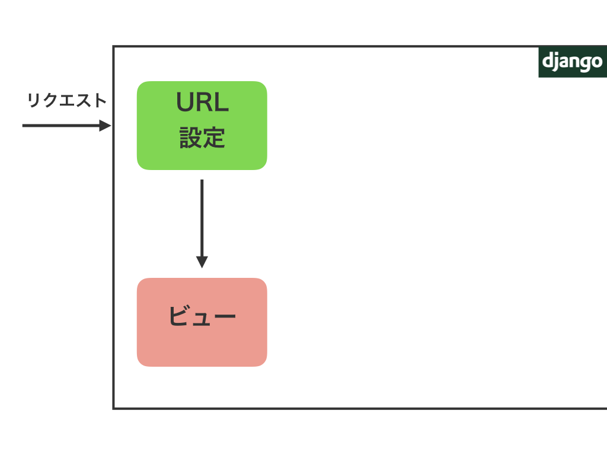
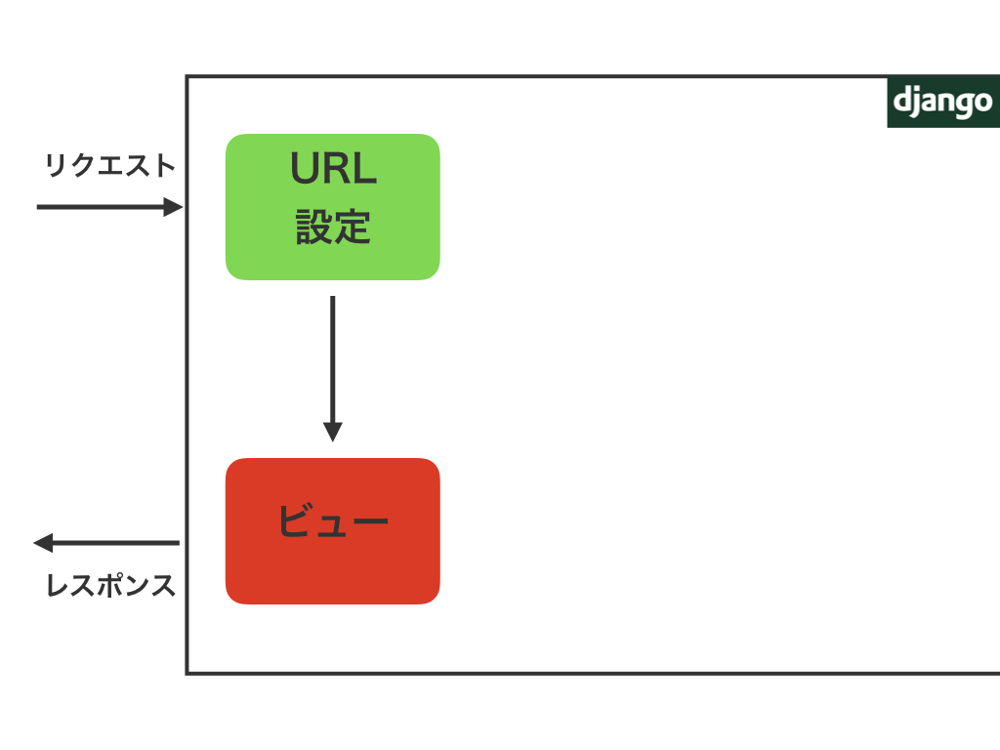
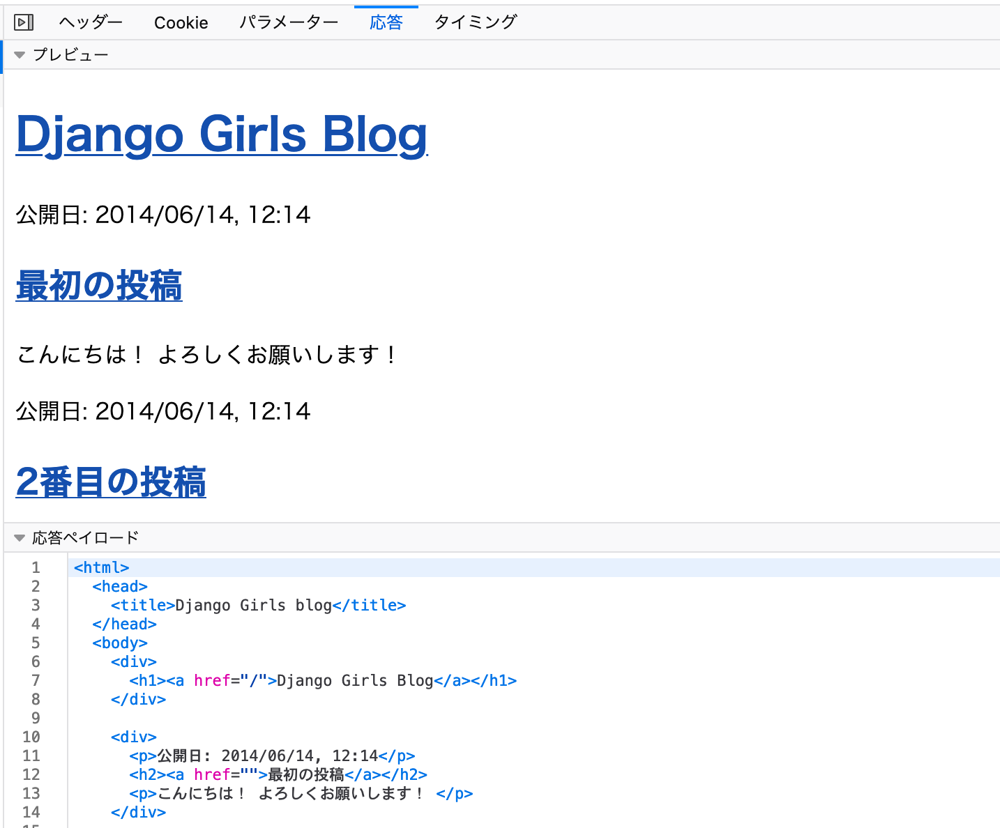
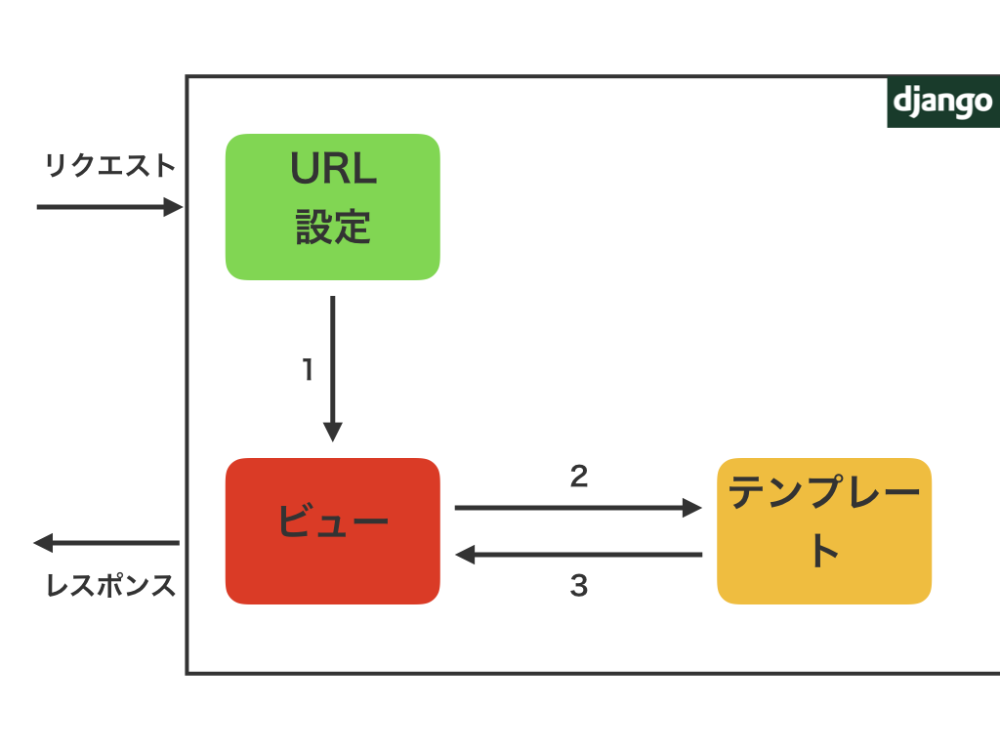
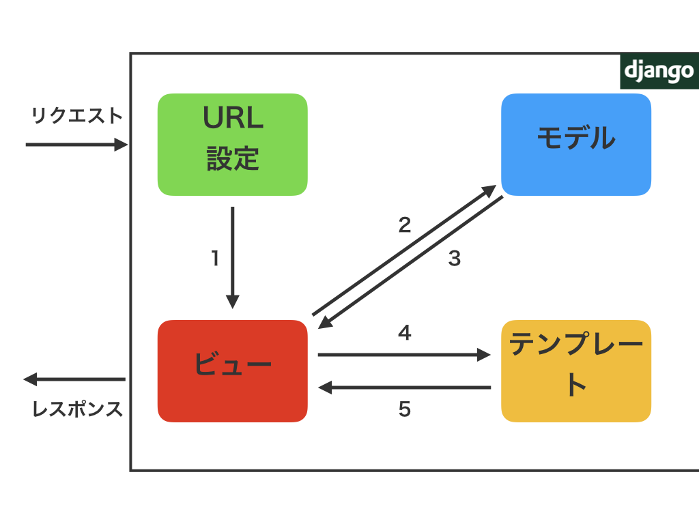

## Djangoで始めるWeb開発の世界 ### 〜Web開発を知らない方に贈る、Django Girls Tutorialとその周辺のクイックツアー〜 #### 2020/02/29 PyCon mini 静岡 nikkie --- ## ✨Welcome to Djangoで始めるWeb開発の世界✨ ❗️「ジャンゴ」（Dは添えるだけで読みません） <i class="fab fa-twitter"></i> ハッシュタグ：#pycon_shizu +++ ### 🙋♀️アンケート🙋♂️ YouTube Liveにコメントして、ふだんPython🐍でやっていることを教えてください - データ分析・機械学習 - 自動化 - ハードウェアやIoT - Pythonに興味がある +++ ### お前、誰よ - ハンドルネーム「にっきー」 (<i class="fab fa-twitter"></i> [@ftnext](https://twitter.com/ftnext)) - エンジニア4年目、Python🐍経験 2年ほど - 株式会社ユーザベース所属 データサイエンティスト（自然言語処理） - プライベートでDjango Girls Tutorialの翻訳に参加したり、ワークショップで教えたり（まだ業務でDjangoは使っていません） +++ ### PyCon JP 2020 スタッフ募集中！ - レベル：「All：エンジニア以外も対象」 - カテゴリ：コミュニティ - PyCon JP Blog [チーム/活動の紹介](https://pyconjp.blogspot.com/2020/02/pyconjp2020-team.html) +++ ### このトークでは - 自動化や機械学習など**Web開発以外に興味があってPythonを始めた方向け** - **Web開発を始めるための情報**を30分で提供するクイックツアー🎫 +++ ### おことわり - このトークは、聞いた後すぐにDjangoが使えるというものでは**ありません**🙇♂️ - このトークは**Djangoの各種チュートリアルに取り組みやすくなるように**情報を提供します - すでにDjangoのチュートリアルの経験がある方は、[補足資料](https://nikkie-ftnext.hatenablog.com/entry/pycon-shizu-2020-django-covered-world)をどうぞ +++ ### お品書き 1. Webアプリについて知ろう（5分） 2. Django Girls TutorialでDjangoを学ぼう（13分） 3. Django Girls Tutorialの外の世界へ（7分） --- ### Djangoで始めるWeb開発の世界 1. **Webアプリについて知ろう** 2. Django Girls TutorialでDjangoを学ぼう 3. Django Girls Tutorialの外の世界へ +++ ### Part1: Webアプリについて知ろう 1. Webアプリとは 2. Webアプリを作ってみよう --- ### Part1: Webアプリについて知ろう 1. **Webアプリとは** 2. Webアプリを作ってみよう +++ ### Webアプリ（ウェブアプリ） - Web + アプリ - アプリはアプリケーション（＝**特定の作業**のためのプログラム）の略 +++ ### 🕸️Web🕸️ 1/2 - インターネットを使った**情報共有**の仕組み（👉Appendix 1-1） - **HTML**で書いて情報に意味づけ（ここがタイトル、ここが本文、、、）（👉Appendix 1-2） ```html <!DOCTYPE html> <html lang="ja"> <head> <meta charset="utf-8"> <title>PyCon mini Shizuoka</title> </head> <body> <section id="content" class="body page-section"> </section> </body> </html> ``` +++ ### 🕸️Web🕸️ 2/2 - Webブラウザ（Google Chrome, Firefoxなど）がHTMLを解釈して表示 - ➡️**Web**アプリは、**Webブラウザ**から使うアプリ - （PCにインストールするのはWebブラウザのみ） +++ ### 皆さんが使ったことのあるWebアプリ [connpass](https://connpass.com/) - Webブラウザから使う（connpassはWordやExcelのように手元のPCにインストールされていない） - 作業として、勉強会の検索や申込みができる +++ ### 勉強会のページを見る https://pycon-shizu.connpass.com/event/152678/  +++ ### 勉強会に申し込む 参加枠などブラウザに入力したデータをconnpassが処理します  --- ### Part1: Webアプリについて知ろう 1. Webアプリとは 2. **Webアプリを作ってみよう** +++ ### Webアプリは作れる！ - 皆さんの知っているPython🐍で作れます！ - デモ用のブログアプリ：https://nikkie-pycon-shizu-django-blog.herokuapp.com/ - 今回話すチュートリアルを最後までやると同様のWebアプリが作れます +++ ### [デモアプリ](https://nikkie-pycon-shizu-django-blog.herokuapp.com/)の操作 1.記事を選択 ➡️ 2.コメントを入力  +++ ### Webアプリをどう作るか？ - 1つの方法として**フレームワーク**を使う - このトークでは、フレームワーク＝*Webアプリケーション*フレームワーク +++ ### フレームワークとは - Webアプリに必要なコードがすでに用意された土台 - 開発者はフレームワークの**流儀に従って**コードを追加する - フレームワークを使うことでWebアプリを**速く開発**できる +++ ### Djangoとは - Pythonで書けるフレームワークの1つ - 「締切がある完璧主義者のためのフレームワーク」と標榜 +++ ### 締切がある完璧主義者向け - 😄Webアプリに必要な機能は一通り用意されている - 😅多機能な分、学習コストが高い - 😄Webに精通していなくてもDjangoの流儀に反しなければ、**安全**で**拡張可能**なWebアプリが作れる +++ ### Webアプリの実態は大量のファイル📁 ```plaintext . ├── blog ├── db.sqlite3 ├── manage.py ├── mysite ├── myvenv └── requirements.txt ``` +++ ### DjangoでWebアプリを作る - Djangoの流儀に沿ってファイルを配置する - ファイルの中には、Djangoの流儀に従ってPythonを書く +++ ### Webアプリ開発＝ファイルを作る - **エディタ**を使って`.py`や`.html`ファイルを作る - エディタの例：Visual Studio Code, Atom, Sublime Textなど - ❗️Jupyter Notebookはエディタではないため、Webアプリ開発では使いません --- ### Djangoで始めるWeb開発の世界 1. Webアプリについて知ろう 2. **Django Girls TutorialでDjangoを学ぼう** 3. Django Girls Tutorialの外の世界へ +++ ### [Django Girls Tutorial](https://tutorial.djangogirls.org/ja/)とは - プログラミングに初めて挑戦する方向けのワークショップの教材 - Djangoでブログアプリを作る - Webに公開されており、誰でも利用可能 +++ ### Part2: Django Girls TutorialでDjangoを学ぼう 1. 作るファイルのまとまりについて：プロジェクトとアプリケーション 2. アプリケーションに含まれるファイルについて - URL設定、ビュー - テンプレート、モデル --- ### Part2: Django Girls TutorialでDjangoを学ぼう 1. **作るファイルのまとまりについて**：プロジェクトとアプリケーション 2. アプリケーションに含まれるファイルについて - URL設定、ビュー - テンプレート、モデル +++ ### Djangoで扱うファイルのまとまりは2種類 Djangoの用語としての意味📗 - プロジェクト＝Webアプリ全体の構成 - アプリケーション＝Webアプリの機能1つ1つ +++ ### Djangoはルールに沿ってファイルを配置してほしい - Django「プロジェクトにはこれこれのファイルを配置してください」 - ➡️用意された**コマンドを使って**必要なファイルを作ることができる +++ ### mysiteという名前のプロジェクトを作る `django-admin startproject mysite .` ```plaintext . ├── manage.py └── mysite ├── __init__.py ├── asgi.py ├── settings.py ├── urls.py └── wsgi.py ``` +++ ### blogという名前のアプリケーションを作る `python manage.py startapp blog` ```plaintext . ├── blog │ ├── __init__.py │ ├── admin.py │ ├── apps.py │ ├── migrations │ │ └── __init__.py │ ├── models.py │ ├── tests.py │ └── views.py # プロジェクトは省略 ``` +++ ### プロジェクトとアプリケーションの関係（👉Appendix 2-1） - プロジェクトは、Webアプリの設定を持つ。最初に作り、**1つだけ** - アプリケーションはWebアプリの**機能ごと**に作り、プロジェクトに追加 --- ### Part2: Django Girls TutorialでDjangoを学ぼう 1. 作るファイルのまとまりについて：プロジェクトとアプリケーション 2. **アプリケーションに含まれるファイルについて** - URL設定、ビュー - テンプレート、モデル +++ ### アプリケーションに含まれるファイル ```plaintext . ├── blog │ │ # URL設定とテンプレートのファイルは作成します │ ├── __init__.py │ ├── admin.py │ ├── apps.py │ ├── migrations │ │ └── __init__.py │ ├── models.py # モデル │ ├── tests.py │ └── views.py # ビュー ``` +++ ### 最小限のWebアプリ - URL設定とビューがあれば、Djangoのアプリケーションは動作する - ➡️それぞれの説明に必要なので、Webの構成要素を簡単に紹介 --- ### Webの構成要素 - リクエスト - レスポンス 📌構成要素はWebアプリ全般に当てはまります +++ ### リクエストとレスポンス  +++ ### リクエスト - WebブラウザにURLを入力（Firefoxでは、"Googleで検索、またはURLを入力します"）してEnter - 例：https://nikkie-pycon-shizu-django-blog.herokuapp.com/post/1/ - ブラウザはURLの一部からWebアプリを動かすコンピュータ（サーバ）を特定 - URLやブラウザに入力したデータを**リクエスト**としてサーバに送信 +++ ### レスポンス - サーバで動くWebアプリはリクエストに応じた処理をする - Webアプリは処理結果を**レスポンス**として、Webブラウザに返す - Webブラウザはレスポンスに含まれるHTMLを解釈して表示 +++ ### 再掲：リクエストとレスポンス  +++ ### リクエストとレスポンスを覗く Webブラウザの**開発者ツール**で見られます - [Chrome DevTools](https://developers.google.com/web/tools/chrome-devtools?hl=ja) - [Firefox 開発ツール](https://developer.mozilla.org/ja/docs/Tools) +++ ### 開発者ツールで見たリクエスト🔍  +++ ### 開発者ツールで見たレスポンス🔍  --- ### 🔙Djangoの話に戻ります🔙 1. 作るファイルのまとまりについて：プロジェクトとアプリケーション 2. **アプリケーションに含まれるファイルについて** - **URL設定**、ビュー - テンプレート、モデル +++ ### URL設定とは - アプリケーションの中に作る`urls.py`というファイルを指す - Webブラウザに入力するURLに関係（URLはリクエストにも含まれる） +++ ### URL設定の動き 1. リクエストに含まれるURLのパスの部分を見る - https://nikkie-pycon-shizu-django-blog.herokuapp.com/post/1/ であれば、パスは `post/1/`（最初に見つかった単一の`/`の後全て 👉Appendix 2-2） 2. 設定を元に、パスに対応するビューを呼び出す +++ ### URL設定のコード ```python urlpatterns = [ # パスが''であれば、ビューの中のpost_listを呼び出すという設定 path('', views.post_list, name='post_list'), # パスが'post/1/'や'post/108/'であれば、ビューの中のpost_detailを呼び出すという設定 path('post/<int:pk>/', views.post_detail, name='post_detail'), # ... ] ``` +++ ### URL設定のイメージ  --- ### Part2: Django Girls TutorialでDjangoを学ぼう 1. 作るファイルのまとまりについて：プロジェクトとアプリケーション 2. **アプリケーションに含まれるファイルについて** - URL設定、**ビュー** - テンプレート、モデル +++ ### ビュー - アプリケーションに含まれる`views.py`というファイルを指す - 空のファイルができており、編集していく - Django Girls Tutorialの範囲では、`views.py`に**関数**を追加 +++ ### ビューの動き 1. URL設定から呼び出される（リクエストの情報も渡る） 2. **リクエストの情報を使った処理**をする（送信されたデータを使うなど） 3. レスポンスを返す +++ ### Django ビューのコード例 <i class="fab fa-github"></i> [blog/views.py (Tag: 1-url_and_view)](https://github.com/ftnext/explain-how-django-works-for-beginner/blob/8f1eaa0856cbfb499d05fdcdb2adb4fb997665ea/blog/views.py) ```python def post_list(request): # 関数として用意する # 引数requestはリクエスト。request.methodのようにリクエストの持つ情報を処理で使える if request.method == 'GET': # ブラウザにURLを入力してアクセスした場合を表す # レスポンスを返す return HttpResponse('GETリクエストへのレスポンスです') # else以下は省略 ``` +++ ### コード例が返すレスポンス  +++ ### URL設定とビューのイメージ  --- ### Part2: Django Girls TutorialでDjangoを学ぼう 1. 作るファイルのまとまりについて：プロジェクトとアプリケーション 2. **アプリケーションに含まれるファイルについて** - URL設定、ビュー - **テンプレート**、モデル +++ ### URL設定とビューで動くWebアプリ - レスポンスを文字列で返した - connpassのようにHTMLを返したい。ビューにも書けるが、長いHTMLになると書きづらい😑 - **ビューとは別にHTMLのファイルを用意**し、読み込んでレスポンスを作ることにする +++ ### テンプレート - アプリケーションの中に作る`templates`ディレクトリに置かれるHTMLファイルのこと - テンプレートは、**HTML+Django独自のタグ** - HTMLに沿ってWebブラウザに表示されるので、テンプレートはWebアプリの**見た目**に関わる（👉Appendix 2-3） +++ ### ビューがテンプレートを使う 1. <span style="color:#999999">URL設定から呼び出される</span> 2. <span style="color:#999999">リクエストの情報を使った処理をする</span> 3. **テンプレートを読み込み**、レスポンスを作る（処理結果を埋め込むなど） 4. <span style="color:#999999">レスポンスを返す</span> +++ ### テンプレートのコード例 <i class="fab fa-github"></i> [blog/templates/blog/post_list.html (Tag: 2-url_view_template)](https://github.com/ftnext/explain-how-django-works-for-beginner/blob/1db8d0827afac7514725db489fc21efcf82bf25d/blog/templates/blog/post_list.html) ```html <div> <p>公開日: 2014/06/14, 12:14</p> <h2><a href="">最初の投稿</a></h2> <p>こんにちは！ よろしくお願いします！ </p> </div> ``` +++ ### ビューがテンプレートを返す コード例 <i class="fab fa-github"></i> [blog/views.py (Tag: 2-url_view_template)](https://github.com/ftnext/explain-how-django-works-for-beginner/blob/1db8d0827afac7514725db489fc21efcf82bf25d/blog/views.py) ```python def post_list(request): # 指定したテンプレート（HTML）を使ったレスポンスを、render関数で作って返す。 # 'blog/post_list.html'は前のスライドで示したテンプレートのこと # （templatesディレクトリの下のblog/post_list.html） return render(request, 'blog/post_list.html', {}) ``` +++ ### レスポンスとして返されたHTMLを覗く  +++ ### URL設定、ビュー、テンプレートのイメージ  --- ### Part2: Django Girls TutorialでDjangoを学ぼう 1. 作るファイルのまとまりについて：プロジェクトとアプリケーション 2. **アプリケーションに含まれるファイルについて** - URL設定、ビュー - テンプレート、**モデル** +++ ### HTMLが返せるようになったWebアプリ - URLに対して決まったHTML（テンプレート）は返せるようになった - 例えばconnpassには、勉強会が10万以上ある（冒頭の例のパス `event/152678/`） - 10万ものHTMLを個別に用意する？ 流石に厳しい😖 +++ ### connpassを観察する - 勉強会のページのレイアウトが同じ（共通のHTML≒テンプレート） - 勉強会の名前など、勉強会ごとにデータが異なる箇所がある（個別のデータ） - ➡️**データをテンプレートから切り出し**て管理する +++ ### 切り出したデータを管理する：データベース 1. Webブラウザからの**リクエストに応じて**、データベースから対応する**データを取得** 2. 取得したデータを埋め込んだHTMLをレスポンスとして返す +++ ### データベースのイメージ 表計算ソフトの表（例：**ブログ記事**に必要な列があり、行が追加されていく） 著者 | タイトル | 本文 | 作成日 | 公開日 ----- | ----- | ----- | ----- | ----- nikkie | ... | ... | 2/24 | 2/24 +++ ### モデル - データベースの**データを取得・作成に使われる** - アプリケーションに含まれる`models.py`というファイルを指す - 空のファイルができており、編集していく（クラスを追加） +++ ### ビューがモデルを使う 1. <span style="color:#999999">URL設定から呼び出される 2. リクエストの情報を使った処理をする（**必要なデータをモデルを通して取得**） 3. <span style="color:#999999">テンプレートを読み込み、レスポンスを作る（処理結果を埋め込むなど）</span> 4. <span style="color:#999999">レスポンスを返す</span> +++ ### モデルのコード例 <i class="fab fa-github"></i> [blog/models.py (Tag: 3-url_view_model_template)](https://github.com/ftnext/explain-how-django-works-for-beginner/blob/3b0133546c8a8a565de5a0427f164b666b5378e0/blog/models.py) ```python class Post(models.Model): # ブログ記事が持つデータ項目を表す author = models.ForeignKey(settings.AUTH_USER_MODEL, on_delete=models.CASCADE) # 著者 title = models.CharField(max_length=200) # タイトル text = models.TextField() # 本文 created_date = models.DateTimeField(default=timezone.now) # 作成日時 published_date = models.DateTimeField(blank=True, null=True) # 公開日時 ``` +++ ### ビューがモデルを使うコード例 <i class="fab fa-github"></i> [blog/views.py (Tag: 3-url_view_model_template)](https://github.com/ftnext/explain-how-django-works-for-beginner/blob/3b0133546c8a8a565de5a0427f164b666b5378e0/blog/views.py) ```python def post_list(request): # ブログ記事のうち、published_date（公開日時）が現在以前のものを取得し。 # 公開日の昇順（以前に公開されたものほど上）に並べ替える posts = Post.objects.filter(published_date__lte=timezone.now()).order_by('published_date') # 取得した複数の記事postsをテンプレートでpostsという名前で扱えるように渡す return render(request, 'blog/post_list.html', {'posts': posts}) ``` +++ ### データをテンプレートに表示するコード例 <i class="fab fa-github"></i> [blog/templates/blog/post_list.html (Tag: 3-url_view_model_template)](https://github.com/ftnext/explain-how-django-works-for-beginner/blob/3b0133546c8a8a565de5a0427f164b666b5378e0/blog/templates/blog/post_list.html) ```html {# データベースから取り出した記事を1つずつ繰り返し処理する。 #} {# 記事の公開日やタイトル、本文を入れたHTMLを作る（ここまでコメント） #} {% for post in posts %} <div class="post"> <div class="date"> <p>公開日: {{ post.published_date }}</p> </div> <h2><a href="">{{ post.title }}</a></h2> <p>{{ post.text|linebreaksbr }}</p> </div> {% endfor %} ``` +++ ### URL設定、ビュー、テンプレート、モデルの連携  --- ### Part2ではDjango Girls Tutorialを見てきました 1. <span style="color:#999999">作るファイルのまとまりについて：プロジェクトとアプリケーション</span> 2. <span style="color:#999999">アプリケーションに含まれるファイルについて</span> - <span style="color:#999999">URL設定、ビュー</span> - <span style="color:#999999">テンプレート、モデル</span> +++ ### [Django Girls Tutorial](https://tutorial.djangogirls.org/ja/)のアプローチ - URL設定、ビュー、モデル、テンプレートを1つずつ順番に追加 - Djangoのアプリケーションには4つ必要なので、**4つ揃うまではエラーが出る** - エラーの解決策を学び、開発手順を身につける +++ ### 📌[Django Girls Tutorial](https://tutorial.djangogirls.org/ja/)の取り組み方案 - Pythonのインストールや文法から始まります。知っているところは飛ばしてください - Djangoが初めてでしたら**「デプロイ」に関係する部分は飛ばす**のをオススメします - 1周めでDjangoに慣れる、2周めでデプロイに挑戦するというように**何周も**してみてください --- ### Djangoで始めるWeb開発の世界 1. Webアプリについて知ろう 2. Django Girls TutorialでDjangoを学ぼう 3. **Django Girls Tutorialの外の世界へ** +++ ### Part3: Django Girls Tutorialの外の世界へ 1. 続編：Django Girls Tutorial Extensions 2. Webアプリでよく見るユーザ管理の機能を作るには 3. Django 3系アップデート --- ### Part3: Django Girls Tutorialの外の世界へ 1. **続編：Django Girls Tutorial Extensions** 2. Webアプリでよく見るユーザ管理の機能を作るには 3. Django 3系アップデート +++ ### [Django Girls Tutorial Extensions](https://tutorial-extensions.djangogirls.org/ja/)とは - Django Girls Tutorialの次の教材 - Tutorialで作ったアプリに**機能追加**していく（コメント機能、ドラフト機能） +++ ### 特筆！ログイン機能を追加  +++ ### ログイン - **本人かどうかを確認**するための仕組み（認証 Authentication） - Webアプリにたいてい備わっている +++ ### ログインの仕組み 1/2 - ログインページに**本人しか知らないデータ**（ユーザ名とパスワードの組合せ）を入力 - Webブラウザはリクエストに入れてサーバに**送信** - サーバでWebアプリがデータベースに保持するユーザ情報と**照合** +++ ### ログインの仕組み 2/2 - 照合できたら、"合言葉"を含めたレスポンスを返す - Webブラウザは以降のリクエストに"合言葉"を含めるようになる（ログアウトするまで） - リクエストに**"合言葉"が含まれれば、本人のアクセスと判断**できる - connpassの場合、申込済みの勉強会の情報を表示 +++ ### Djangoでログイン機能を追加（[Extensions](https://tutorial-extensions.djangogirls.org/ja/authentication_authorization/)） - ログインに使うビューとモデルはDjangoに用意されているのでそれを使う - **URL設定**にログイン用のURLを追加 - **テンプレート**：ログインに使うHTMLを追加 - +α プロジェクトの`settings.py`にログインの設定を追加 +++ ### 本格的な開発へ - 規模が大きなWebアプリで使われるデータベース(PostgreSQL)に切り替え - herokuへのデプロイを紹介 --- ### Part3: Django Girls Tutorialの外の世界へ 1. 続編：Django Girls Tutorial Extensions 2. **Webアプリでよく見るユーザ管理の機能を作るには** 3. Django 3系アップデート +++ ### Webアプリでよくみるユーザ管理機能 その1 パスワードが思い出せない🤨→[connpass パスワード再設定](https://connpass.com/account/password_reset/)  +++ ### ユーザのパスワードに関する機能 - ログアウトしていてパスワードが思い出せず変更 - ログインしている状態でパスワードを変更 これらもDjangoが用意している（[認証ビュー](https://docs.djangoproject.com/ja/3.0/topics/auth/default/#module-django.contrib.auth.views)） +++ ### 認証ビューを使う前に：ビューの書き方は2通り - Django Girls Tutorialで学ぶのは関数によるビュー - Djangoのビューは**クラス**でも書ける - Djangoが用意している認証ビューはクラスで書かれたビュー +++ ### クラスで書かれた認証ビューを使う 📌URL設定で`as_view()`メソッドの返り値と対応づける ```python from django.contrib.auth import views as auth_views urlpatterns = [ # ..., path('password_reset/', auth_views.PasswordResetView.as_view()), # ..., ] ``` +++ ### Webアプリでよくみるユーザ管理機能 その2 [connpass ユーザ登録](https://connpass.com/signup/)  +++ ### ユーザ登録を自作する - Djangoは**Webアプリで共通する処理向けのビュー**（ジェネリックビュー）も用意している - これらはクラスで書かれている - データの作成処理向けの[CreateView](https://docs.djangoproject.com/ja/3.0/ref/class-based-views/generic-editing/#createview)を使ってユーザ登録用のビューを作る +++ ### ジェネリックビューでユーザ作成機能を作る （views.py） ```python from django.contrib.auth.forms import UserCreationForm from django.urls import reverse_lazy from django.views.generic import CreateView class Register(CreateView): template_name = 'accounts/register.html' form_class = UserCreationForm success_url = reverse_lazy('post_list') ``` +++ ### なぜビューの書き方を2通り知る必要がある？ - Djangoの機能は豊富で1つのチュートリアルではカバーしきれない➡️検索して調べていく - 関数ではなくクラスを使ったビューの書き方もあると知っていると**参照できる情報が広がる** - ※ジェネリックビューの利用には賛否あり（早く開発できる一方で、複雑な処理の実装は大変らしい） --- ### Part3: Django Girls Tutorialの外の世界へ 1. 続編：Django Girls Tutorial Extensions 2. Webアプリでよく見るユーザ管理の機能を作るには 3. **Django 3系アップデート** +++ ### Django 3系のアップデートの1つ - プロジェクトを作成すると、`asgi.py` ができるようになった - その他は[Django 3.0 リリースノート](https://docs.djangoproject.com/ja/3.0/releases/3.0/) +++ ### `asgi.py` がもたらすもの - Webブラウザの**再読み込みがいらない**Webアプリが作れる - 例えば、Slack（チャットアプリ）は、ページを再読み込みせずに新しい投稿が見られる（👉Appendix 3-1） +++ ### 再読み込み不要なWebアプリに向けて開発進行中！ - 現在は試験的。ビューはまだサポートされていない（ref: [非同期サポート](https://docs.djangoproject.com/ja/3.0/topics/async/)） - 再読み込み不要なWebアプリが作れるようにする提案：[DEP 0009](https://github.com/django/deps/blob/master/accepted/0009-async.rst#sequencing)。承認され、実装進行中 --- ### 📌まとめ：Djangoで始めるWeb開発の世界📌 - Webアプリを**速く開発**するためのフレームワーク Djangoを紹介 - **ファイルをまとめる**単位：プロジェクトとアプリケーション - アプリケーションでは、URL設定、ビュー、テンプレート、モデルが**連携** - 続編のExtensionsやDjangoが用意しているクラスで書かれたビューも紹介 +++ ### 興味を持った方向け、Djangoのチュートリアル - [Django Girls Tutorial](https://tutorial.djangogirls.org/ja/) & [Extensions](https://tutorial-extensions.djangogirls.org/ja/) - [Python Django入門 | Qiita](https://qiita.com/kaki_k/items/511611cadac1d0c69c54) (1)〜(7) - [Django 公式ドキュメントのチュートリアル](https://docs.djangoproject.com/ja/3.0/intro/tutorial01/) その1〜その7 +++ ### nikkieのアウトプットより - Django Girls Tutorialをベースにしたハンズオン - [エラーの解決の仕方編（2019年1月）](https://gitpitch.com/ftnext/2019_slides/master?p=elv_Jan_django_errorfriends) - [Django開発の見取り図編（2019年2月）](https://gitpitch.com/ftnext/2019_slides/master?p=elv_Feb_django_developcompass) - ユーザ管理機能など、Django Girls Tutorialの次についてのアウトプット - [Django Girls Blogのネクストステップ（2019年5月 Django Congress）](https://gitpitch.com/ftnext/2019_slides/master?p=django_congress_2019_blog_next_step) - [ユーザ登録ハンズオン（2019年6月）](https://gitpitch.com/ftnext/2019_slides/master?p=django_girls_Jun_user_register_handson) +++ ### 📗参考文献📗 - 『[プロになるためのWeb技術入門](https://gihyo.jp/book/2010/978-4-7741-4235-7)』 - 「[開発者向けのWeb技術 | MDN web docs](https://developer.mozilla.org/ja/docs/Web)」 +++ ### Special Thanks - 1月に発表の機会をいただいたサポーターズ勉強会 - 1月時点の資料のレビュー：かしゆかさん - 発表者練習会：岡崎さん、nakajimaさん - Djangoの理解を深める機会をいただいているDjango Girls Tokyo参加者の皆さま +++ ### ご清聴ありがとうございました ### Happy Django Life! Contact: [<i class="fab fa-twitter"></i> @ftnext](https://twitter.com/ftnext)／[匿名質問箱](https://peing.net/ja/ftnext) Appendixが続きます --- ### Appendix - 本編の補足説明（1-1など） - 追加の説明 --- ### 1-1：インターネットとWeb - インターネット：世界中のコンピュータがつながるネットワーク🌐 - Web（World Wide Webの略）はインターネットの使い方の1つ - インターネットの別の使い方として、電子メールもある +++ ### 1-2：HTMLの補足説明 - 情報の意味付けには**タグ**を使う - 例：見出し、段落、箇条書き、画像、表（詳しくは[HTMLの基本 | MDN web docs](https://developer.mozilla.org/ja/docs/Learn/Getting_started_with_the_web/HTML_basics)） - ブラウザはHTMLを解析して描画している（part2で説明するレスポンスに含まれるのはあくまで**文字列**） +++ ### 2-1：プロジェクトとアプリケーションの関係 - プロジェクトは**1つ**。その中に**1つ以上のアプリケーション**を持つ - ブログアプリの場合、2つのアプリケーション - ブログ記事を管理するための機能（アプリケーション） - ユーザ管理をするための機能（アプリケーション） [参考：ドキュメント](https://docs.djangoproject.com/ja/3.0/intro/tutorial01/#creating-the-polls-app) +++ ### 2-2：URLはパスの他にホストがある 例：https://nikkie-pycon-shizu-django-blog.herokuapp.com/post/1/ - `https`：プロトコル - `nikkie-pycon-shizu-django-blog.herokuapp.com`：ホスト（インターネット上のコンピュータ） - `post/1/`：パス（ホスト上のどこにアクセスするかの指定） +++ ### 2-3：Webアプリの見た目に関わるのはテンプレート（HTML）以外にもある - CSS（見た目の指定） - JavaScript（動きをつける） - どちらも**Webアプリ一般**で登場する +++ ### 3-1：Djangoで再読み込み不要なアプリを作る - [Django Channels](https://channels.readthedocs.io/en/latest/index.html)を使うという方法もある - PyCon JP 2018「Djangoだってカンバンつくれるもん」（[スライド](https://speakerdeck.com/denzow/djangotovuedezuo-rukanbanapurikesiyon)・[YouTube](https://youtu.be/RTIPoW21K3U)） --- ### URL設定の追加説明 - URLconfとも呼ばれる（URL configurationの略） - プロジェクトの`urls.py`からアプリケーションの`urls.py`を`include` - ＝アプリケーションごとの**URL設定を参照**する - アプリケーションごとにURLの**変更が楽** +++ ### Django Girlsとは - 女性がプログラミングに出会う機会を提供するワークショップ - Tech業界における女性の割合が少ないという問題意識から発足 - 2014年にベルリンから始まり、世界各地で開催（[Tokyo](https://djangogirls.org/tokyo/)でも） - また、Tokyoでは毎月勉強会を開催（[connpassグループ](https://djangogirls-org.connpass.com/)） +++ # EOF